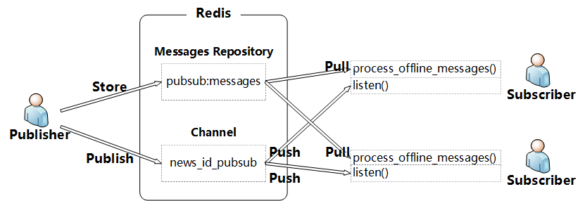

Durable Redis pubsub
As we know, the pubsub in Redis could NOT store the messages published(i.e. w/o durability). So, when the subscriber is offline, it will miss all the messages during this offline period.
The typical way to use pubsub is as follows.
Publisher:1
2
3
4
5
6
7
8
9
10
11
12
13
14
15
16
17
18
19
20
21
22
23
24
25
26
27
28
29
30
31#!/usr/bin/env python3
# coding: utf-8
# File: redis_publisher_wo_class.py
# Author: lxw
# Date: 9/28/17 4:22 PM
# Reference: http://blog.csdn.net/drdairen/article/details/51659061
import redis
import time
if __name__ == "__main__":
pool = redis.ConnectionPool(host="127.0.0.1", port=6379, db=0)
redis_conn = redis.Redis(connection_pool=pool)
count = 0
while 1:
redis_conn.publish("ready", "news_id:{}".format(count))
print("publish news_id:{}".format(count))
time.sleep(2)
count += 1
"""
# Output
$ python redis_publisher_wo_class.py
publish news_id:0
publish news_id:1
publish news_id:2
publish news_id:3
...
"""
Subscriber:1
2
3
4
5
6
7
8
9
10
11
12
13
14
15
16
17
18
19
20
21
22
23
24
25
26
27
28
29
30
31
32
33
34
35
36
37
38
39
40
41
42
43
44
45
46
47
48
49
50
51#!/usr/bin/env python3
# coding: utf-8
# File: redis_subscriber_wo_class.py
# Author: lxw
# Date: 9/28/17 4:07 PM
# Reference: http://blog.csdn.net/drdairen/article/details/51659061
import redis
import time
def get_redis_conn():
"""
:return: a connection of redis
"""
pool = redis.ConnectionPool(host="127.0.0.1", port=6379, db=0)
redis_conn = redis.Redis(connection_pool=pool)
return redis_conn
def subscribe(redis_conn, channels):
"""
:param redis_conn: a connection of redis, the return value of get_redis_conn().
:param channels: list of channel names(str).
:return: None
"""
subscriber = redis_conn.pubsub()
subscriber.psubscribe(channels)
for item in subscriber.listen():
# 要检查type，一旦listen就会收到一个消息，但不是发布者的消息，而是系统发来的，内容为{'pattern': None, 'type': 'subscribe', 'channel': 'spub', 'data': 1L}
# 表示: 订阅成功，频道是spub，当前，有一个订阅用户
if item["type"] == "pmessage": # "message"
data = item["data"].decode("utf-8")
print("receive {0}".format(data))
subscriber.unsubscribe()
if __name__ == "__main__":
redis_conn = get_redis_conn()
channels = ["ready"]
subscribe(redis_conn, channels)
"""
# Output
$ python redis_subscriber_wo_class.py
receive news_id:0
receive news_id:1
receive news_id:2
receive news_id:3
...
"""
In order to receive the messages published during the offline period when the subscriber is online, I referred to the code on “Redis IN ACTION” and designed a Naive mechanism which has the following features(good and bad):
- All messages are stored and processed in an incremental order(the key and the restriction).
- When subscriber is online, it processed the historical(offline) messages firstly, then listen on the pubsub channel.
- Support multiple subscribers.
- Unless ensuring that all messages are processed in order, this mechanism could NOT support multiple threads/processes.
- Automatically removing the messages that have been received and processed by all subscribers.
The architecture of the mechanism is as follows.

The keys in Redis is as follows.
The implementation of the mechanism is as follows.
Publisher:1
2
3
4
5
6
7
8
9
10
11
12
13
14
15
16
17
18
19
20
21
22
23
24
25
26
27
28
29
30
31
32
33
34
35
36
37
38
39
40
41
42
43
44
45
46
47
48
49
50
51
52
53
54
55
56
57
58
59
60
61
62
63
64
65
66
67
68
69
70
71
72
73
74
75
76
77
78
79
80
81
82
83
84
85
86
87
88
89
90
91#!/usr/bin/env python2.7
# coding: utf-8
# File: publisher.py
# Author: lxw
# Date: 9/30/17 2:42 PM
# Reference: http://blog.csdn.net/drdairen/article/details/51659061
"""
这部分代码与陈贺的写入到redis对接
"""
import json
import time
from public_utils import *
def publish_news_id(redis_conn, news_id_list):
# TODO: interface to "He Chen"
"""
:param redis_conn: the redis connection
:param news_id_list: list of news_id
:return: None
"""
for news_id in news_id_list:
content = "message-" + str(news_id)
msg_json, msg_id = append_message(redis_conn, content)
redis_conn.publish(CHANNEL_NAME, msg_json)
print("publish: {0}".format(msg_json))
def stats_init(conn):
# def create_chat(conn, sender, recipients, message, chat_id=None):
"""
:param conn: redis connection
:return:
"""
recipients = ["sentiment_analysis", "news_importance"]
recipients_dic = dict((r, 0) for r in recipients)
conn.zadd(PROC_STATS, **recipients_dic)
# return append_message(conn, "Initialize the PROC_STATS. OK.")
def append_message(conn, message_content):
"""
Append new elements into MESSAGES.
:param conn: redis connection
:param message_content: the content of the message
:return: tuple of (msg_json, msg_id)
"""
uuid_str = acquire_lock(conn)
if not uuid_str:
raise Exception("Couldn't get the lock.")
msg_json = ""
msg_id = ""
try:
msg_id = conn.incr(MSG_ID)
"""
current_time = time.localtime(time.time())
current_time = time.strftime("%Y-%m-%d %H:%M:%S", current_time)
msg_json = json.dumps({
"msg_id": msg_id,
"timestamp": current_time,
"message": message_content,
})
"""
msg_json = json.dumps({
"msg_id": msg_id,
"message": message_content,
})
conn.zadd(MESSAGES, msg_json, msg_id)
finally:
release_lock(conn, uuid_str)
return msg_json, msg_id
if __name__ == "__main__":
redis_conn = get_redis_conn()
# initialize redis keys.
stats_init(redis_conn)
count = 1
# TODO: 暂时先用time.sleep()来模拟crontab
while 1:
publish_news_id(redis_conn, range(count, count+10))
count += 10
time.sleep(2)
Subscriber:1
2
3
4
5
6
7
8
9
10
11
12
13
14
15
16
17
18
19
20
21
22
23
24
25
26
27
28
29
30
31
32
33
34
35
36
37
38
39
40
41
42
43
44
45
46
47
48
49
50
51
52
53
54
55
56
57
58
59
60
61
62
63
64
65
66
67
68
69
70
71
72
73
74
75
76
77
78
79
80
81
82
83
84
85
86
87
88
89
90
91
92
93
94
95
96
97
98
99
100
101
102
103
104
105
106
107
108
109
110
111
112
113
114
115
116
117
118
119
120
121
122
123
124
125
126
127
128
129
130
131
132
133
134#!/usr/bin/env python2.7
# coding: utf-8
# File: subscriber.py
# Author: lxw
# Date: 9/30/17 2:42 PM
# Reference: http://blog.csdn.net/drdairen/article/details/51659061
"""
这部分代码与情感分析、资讯分类、资讯重要性对接
"""
import json
import time
from public_utils import *
SUBSCRIBER = "sentiment_analysis"
# SUBSCRIBER = "news_importance"
def process_news(redis_conn, subscriber, message):
# TODO: interface to "Rui Li, Huanyong Liu, Xiaowei Liu"
"""
模拟后端sentiment_analysis，news_importance对每一条资讯的计算和处理
:param redis_conn:
:param subscriber:
:param message: type(message): dict. the messages to be processed. e.g. {u'message': u'message-1', u'msg_id': 1}
:return:
"""
# NOTE: 进入该函数需要首先更新状态
# 每处理一条message，更新一次Redis中的处理进度，并删除被所有subscriber接收到的messages。防止程序意外退出后，已处理的message被重复处理。
update_process_stats(redis_conn, subscriber, message["msg_id"])
print(" --Processing message:{0}".format(message))
time.sleep(0.01)
def update_process_stats(redis_conn, subscriber, msg_id):
"""
:param redis_conn:
:param subscriber:
:param msg_id: type(msg_id): int.
:return: None
"""
# 本函数专门用于修改PROC_STATS中recipient的处理状态
redis_conn.zadd(PROC_STATS, subscriber, msg_id) # 如果已经存在了，会更新其值
# zrange() & zrangebyscore() 都是按照score进行排序(不是按照value进行排序的)，不同的是zrange()的返回结果按照索引的区间进行筛选， zrangebyscore()的返回结果按照score的区间进行筛选
min_id = redis_conn.zrange(PROC_STATS, 0, 0, withscores=True) # min_id: <type 'list'>: [('sentiment_analysis', 0.0)]
if min_id:
redis_conn.zremrangebyscore(MESSAGES, 0, min_id[0][1])
def process_offline_messages(redis_conn, subscriber):
"""
Process the news that is received when the subscriber is offline.
:param redis_conn:
:param subscriber:
:return: flag(表征是否存在历史消息)
"""
flag, offline_messages = get_pending_messages(redis_conn, subscriber)
# offline_messages: <type 'list'> list of dict: [{u'message': u'message-1', u'msg_id': 1}, {u'message': u'message-2', u'msg_id': 2}, {u'message': u'message-3', u'msg_id': 3}, {u'message': u'message-4', u'msg_id': 4}, {u'message': u'message-5', u'msg_id': 5}, {u'message': u'message-6', u'msg_id': 6}, {u'message': u'message-7', u'msg_id': 7}, {u'message': u'message-8', u'msg_id': 8}, {u'message': u'message-9', u'msg_id': 9}, {u'message': u'message-10', u'msg_id': 10}, {u'message': u'message-11', u'msg_id': 11}, {u'message': u'message-12', u'msg_id': 12}, {u'message': u'message-13', u'msg_id': 13}, {u'message': u'message-14', u'msg_id': 14}, {u'message': u'message-15', u'msg_id': 15}, {u'message': u'message-16', u'msg_id': 16}, {u'message': u'message-17', u'msg_id': 17}, {u'message': u'message-18', u'msg_id': 18}, {u'message': u'message-19', u'msg_id': 19}, {u'message': u'message-20', u'msg_id': 20}]
if flag:
print("Processing {0}'s history news:".format(subscriber))
for msg_dic in offline_messages:
process_news(redis_conn, subscriber, msg_dic)
return flag
def subscribe_news_id(redis_conn, recipient, channels):
"""
:param redis_conn: a connection of redis, the return value of get_redis_conn().
:param recipientr: The same as the "subscriber" parameter in process_offline_messages() and update_process_stats().
:param channels: list of channel names(str).
:return: None
"""
subscriber = redis_conn.pubsub()
subscriber.psubscribe(channels)
for item in subscriber.listen():
# 要检查type: 一开始listen就会收到一个消息(系统消息, 而非发布者的消息). 内容为{'pattern': None, 'type': 'subscribe', 'channel': 'news_id_pubsub', 'data': 1L}
# 表示: 订阅成功，频道是news_id_pubsub，当前，有一个订阅用户
if item["type"] == "pmessage": # "message"
data = item["data"].decode("utf-8") # data: json TODO
if data == u"COMPLETE":
print("Complete. Subscriber received all data.")
subscriber.unsubscribe()
else:
process_news(redis_conn, recipient, json.loads(data))
print("Subscriber received: {0}".format(data))
def get_pending_messages(conn, recipient):
"""
:param conn: redis connection
:param recipient: the recipient(user) who wants to get all the pending messages
:return: the pending messages of "recipient": tuple of (flag, messages), i.e. (True, messages)
flag表征是否存在历史消息
"""
process_stat = conn.zscore(PROC_STATS, recipient) # process_stat: float
if process_stat is None: # if not process_stat: NOTE: 这样写是不行的，0.0的情况就会无法处理
return False, []
messages = conn.zrangebyscore(MESSAGES, process_stat+1, "inf") # 获取所有未读消息. messages: list of dict
if not messages:
return False, []
messages[:] = map(json.loads, messages)
"""
# 不在这个函数里修改PROC_STATS中recipient的处理状态
process_stat = messages[-1]["msg_id"]
conn.zadd(PROC_STATS, recipient, process_stat) # 如果已经存在了，会更新其值
# zrange() & zrangebyscore() 都是按照score进行排序(不是按照value进行排序的)，不同的是zrange()的返回结果按照索引的区间进行筛选， zrangebyscore()的返回结果按照score的区间进行筛选
min_id = conn.zrange(PROC_STATS, 0, 0, withscores=True) # min_id: <type 'list'>: [('sentiment_analysis', 0.0)]
if min_id:
conn.zremrangebyscore(MESSAGES, 0, min_id[0][1])
"""
return True, messages
if __name__ == "__main__":
redis_conn = get_redis_conn()
# Before listening, we SHOULD process the news which is received when the subscriber is offline.
flag = True
while flag:
flag = process_offline_messages(redis_conn, subscriber=SUBSCRIBER)
# TODO： NOTE： 如果在while循环结束，到subscribe_news_id()的这段时间有新的message进入，那么这部分消息仍然是会丢失的（如何保证这部分数据也不丢失？）
# After processing the news which the subscriber has missed, the subscriber starts to listen the CHANNEL.
channels = [CHANNEL_NAME]
subscribe_news_id(redis_conn, SUBSCRIBER, channels) # block on listen() in subscribe_news_id().
NOTE
For some reason, this mechanism is implemented by Python2.7 instead of Python 3.6+.
requirements: redis==2.10.5